Designing parts around how they get made, measured, and assembled.
I'm a mechanical engineering student at the University of Illinois Urbana-Champaign who likes the space between a CAD model and a part that actually works: fixtures, tolerances, test plans, and the iterations in between.
DFM and DFAGD&T and tolerance analysisFixture designTest and measurementSiemens NX and Fusion 360
TerraTrek six-leg walker, full assembly in Fusion 360.
3.73GPA, Pi Tau Sigma (MechE honors), Dean's List
MolexMechanical engineering intern, summer 2026
PROJECT 01 · ME 270 DESIGN FOR MANUFACTURABILITY · DEC 2025
HangaShelf: reverse engineering a molded stool into a new product
I took apart a discarded foldable stool made of injection-molded polypropylene, rebuilt all five unique panels in Fusion 360 from measurements, and redesigned the parts into a hanging bedside caddy for a specific user. The final product uses no new molded parts and no fasteners, and every panel I didn't reuse goes to PP recycling.
All five panels reverse engineered and reassembled in CAD.
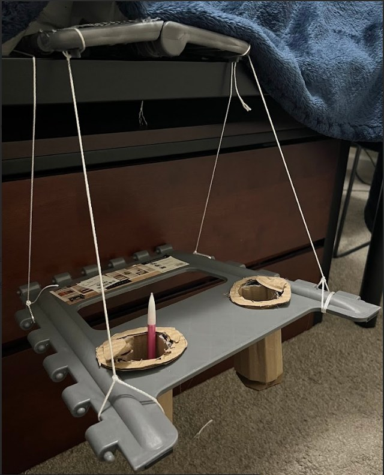
Finished prototype hanging from a bed frame.
01 · TEARDOWN
Bill of materials
Broke the stool into 5 unique PP panels and documented each one's material, process (injection molding), quantity, and estimated unit cost of $0.18 to $0.25.
02 · CAD
Drawings with GD&T
Modeled every panel from measurements and produced dimensioned engineering drawings with GD&T callouts for the parts the new design reuses.
03 · SELECTION
10 concepts, 2 matrices
Scored 10 repurposing ideas against a bedside table datum, then compared the top two on the product spec. The hanging caddy scored +22 against +6 for a vertical tower.
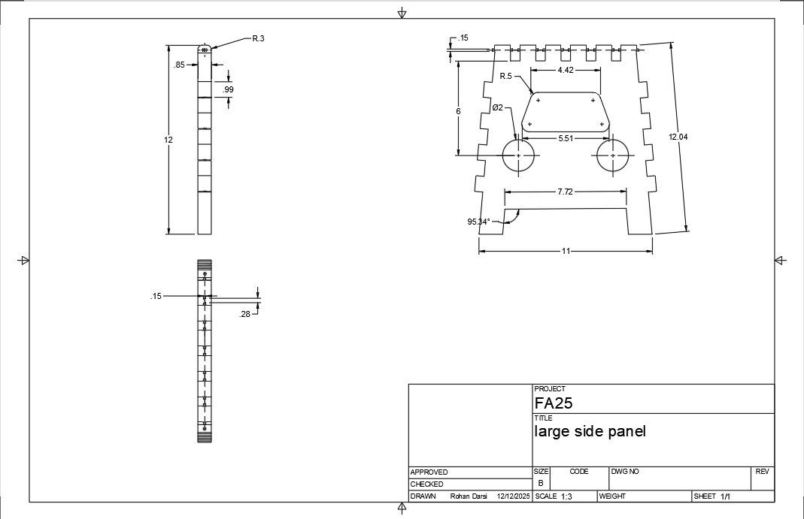
Engineering drawing of the large side panel.
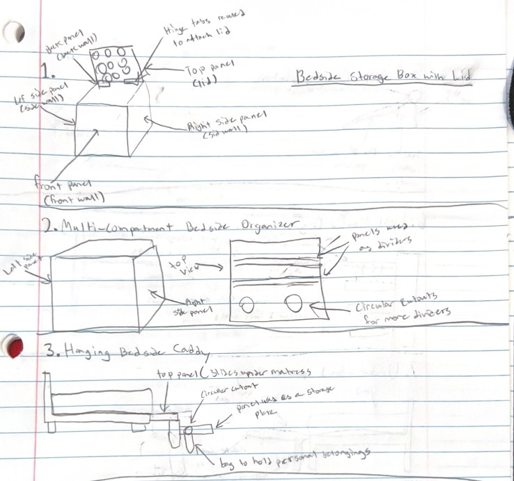
Early concept sketches before the decision matrix.
04 · PROTOTYPE
Iterating on the build
Switched from one continuous string to four strings tied to the existing molded notches. Assembly got easier and the load spread more evenly. Added insertable sockets so small items don't fall through.
05 · MEASUREMENT
15 samples per dimension
Took 15 repeat measurements on four critical dimensions with a tape measure and calipers, then reported mean, standard deviation, and a confidence interval for each.
06 · DFA REVIEW
Zero fasteners
A theoretical minimum of 5 parts, one assembly direction, and no tools. Knots replace screws, which also makes the product easy to take apart for recycling.
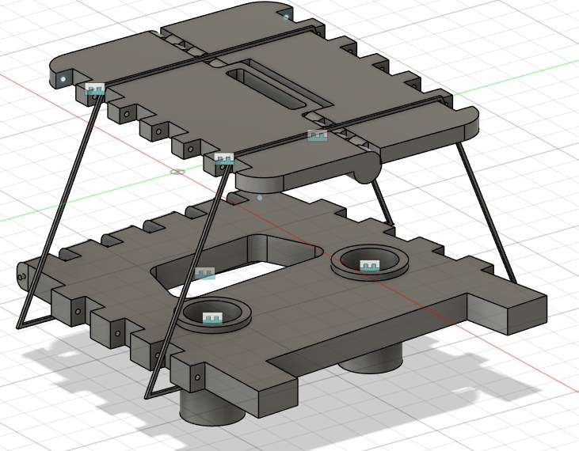
Final caddy design in CAD.
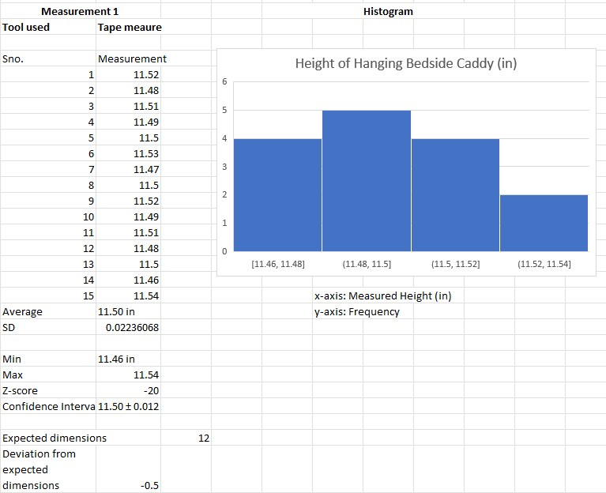
Caddy height: 11.50 in mean, SD 0.022 in, CI ±0.012 in.
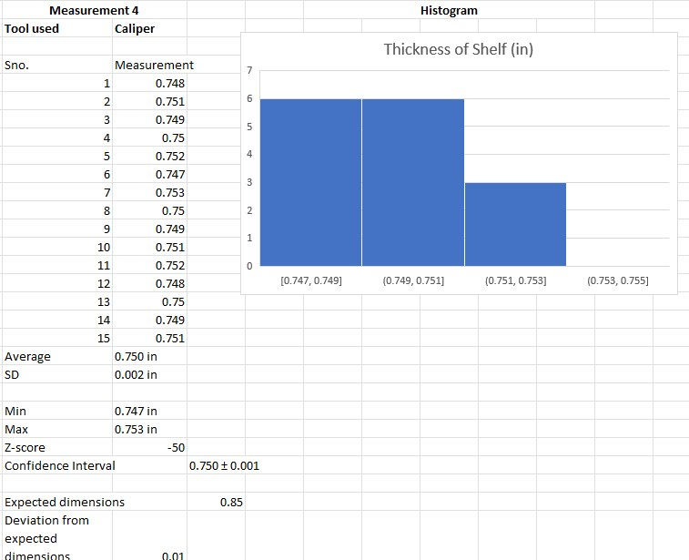
Shelf thickness by caliper: 0.750 in mean, SD 0.002 in.
PROJECT 02 · ME 370 MECHANICAL DESIGN · FALL 2026 · TEAM OF 4
TerraTrek: a stair climbing robot for terraced farmland
Terraced farms are still worked mostly by hand because wheeled machines need level ground. Our team is building a small legged robot that climbs 1:4 ramps and steps up to 4.0 cm tall and 8 cm deep while planting seeds along the way. It has to fit in an 18 × 18 × 24 cm box, run on one motor, use at most eight legs, and stay under a $60 budget. Every leg is a crank-rocker four-bar linkage, and the drivetrain, linkages, and seed mechanism were all modeled in Fusion 360 and backed by analysis.
Current six-leg version: crank-rocker legs with claw-shaped couplers.
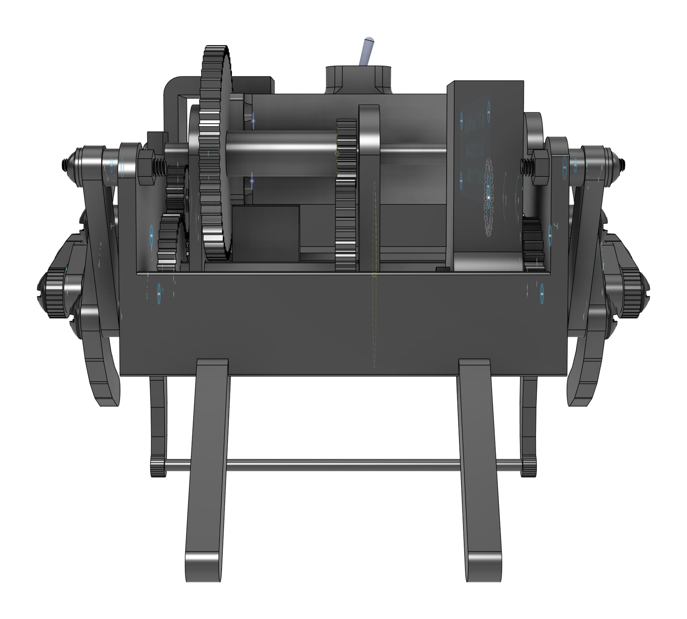
Front view: gear trains drive the legs on both sides of the chassis.
76 mmStride per crank turn, with about 3.7 cm of foot lift
0.392Duty factor from the PVA sweep
102:1Total reduction, for about 7 cm/s walking speed
$31.66Bill of materials against a $60 budget
Figures below are from the first design review, when the robot had four legs in a trot gait.
01 · LEG KINEMATICS
Four-bar foot path
Ground 7.0 cm, crank 2.2 cm, coupler 5.5 cm, rocker 4.5 cm, with the foot on a coupler extension. We wrote the vector loop in complex form and solved position, velocity, and acceleration over full crank cycles in code.
02 · INSTANT CENTERS
Where the leg is weakest
Checked four critical points in the gait. Mechanical advantage is 59.3 m⁻¹ at foot strike but drops to 17.0 m⁻¹ at mid-stance. The instant center results matched our PVA code to within 0.01%.
03 · MOTOR TESTING
Torque vs. speed
Load tested the 34:1 gearmotor at 9 V and 12 V. Linear fits had R² above 0.999, and we took stall torque from the datasheet because our brake only reached about 3% of stall.
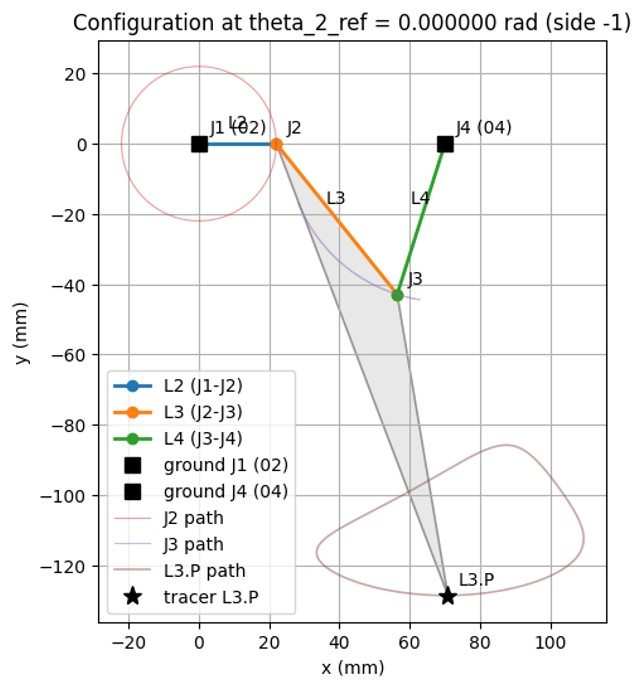
Leg linkage and the traced foot path.
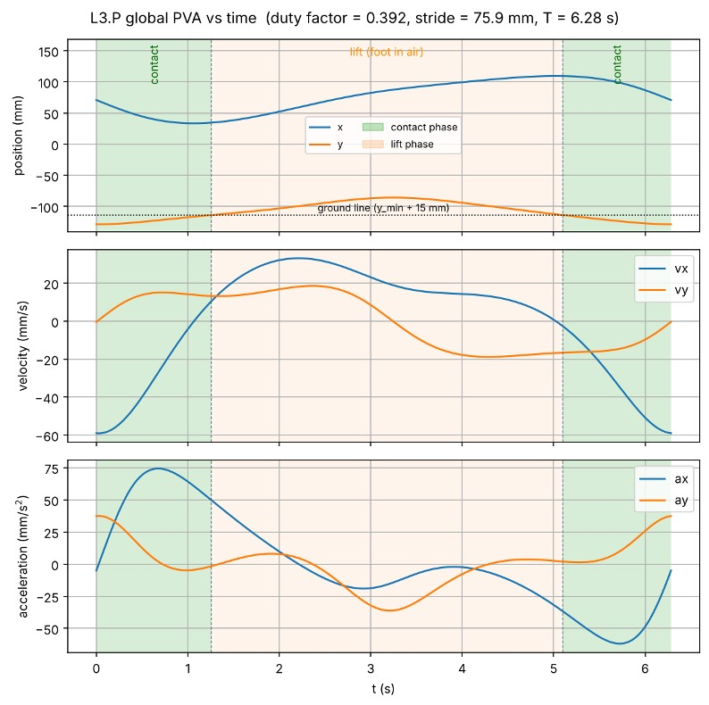
Foot position, velocity, and acceleration with contact phases marked.
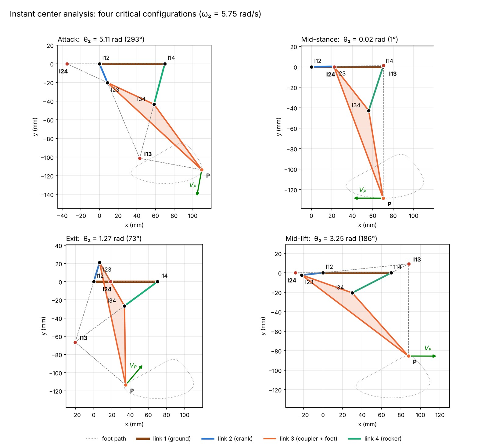
Instant centers at attack, mid-stance, exit, and mid-lift.
04 · GEAR RATIO
Sized for the worst case
Sized the gears using the low mechanical advantage at the end of stance instead of an average. Any ratio from about 1 to 9.5 worked. A 3:1 stage kept the motor at 16% of stall at peak load with a 6.2× torque margin.
05 · SEED DROP
One seed per step
A one-pocket seed wheel under a hopper turns once per crank turn, driven off the motor pinion instead of the leg crank. A 7.6 cm stride on 8.0 cm steps drifts only 0.4 cm per step, so every seed still lands on the tread.
06 · ITERATION
From four legs to six
Design review feedback called for more reduction and gear drive on both sides of the chassis. That pushed us to the current six-leg layout with a simpler, printable gear train.
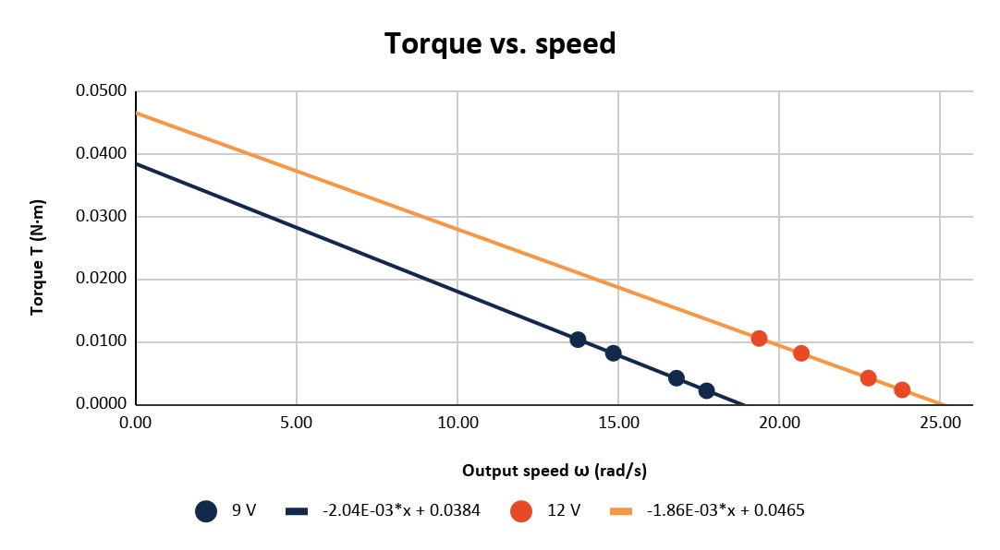
Measured torque vs. speed with best fit lines.
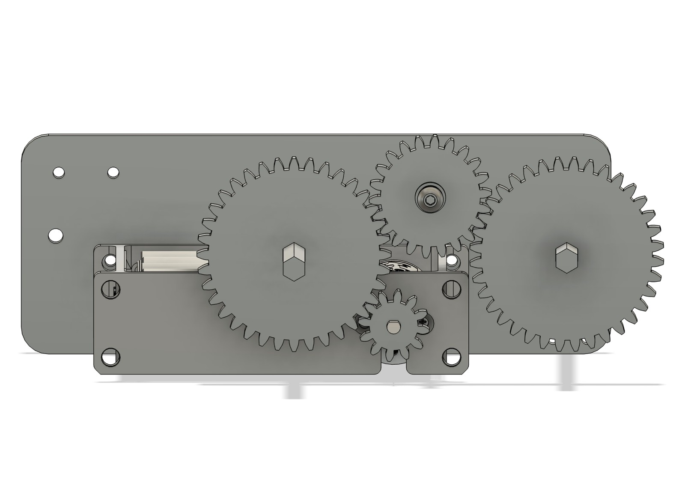
Transmission inside the side plate, four-leg version.
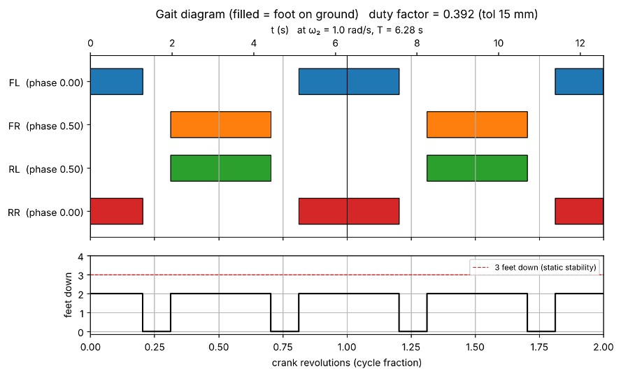
Trot gait: diagonal pairs alternate support.
PROJECT 03 · JUNE 2025
Torsion spring wind-up toy
A small car powered by a spring you wind with a key. Inside the shell, the key shaft winds a custom spiral spring, and a 34-tooth ratchet drive gear, a pawl carrier, and a 14-tooth pinion carry that stored energy to the wheels. I designed it from concept to printed parts and tuned the fits through several rounds of fit and function testing.
Fusion 360Tolerance analysisRatchet and pawl3D printing
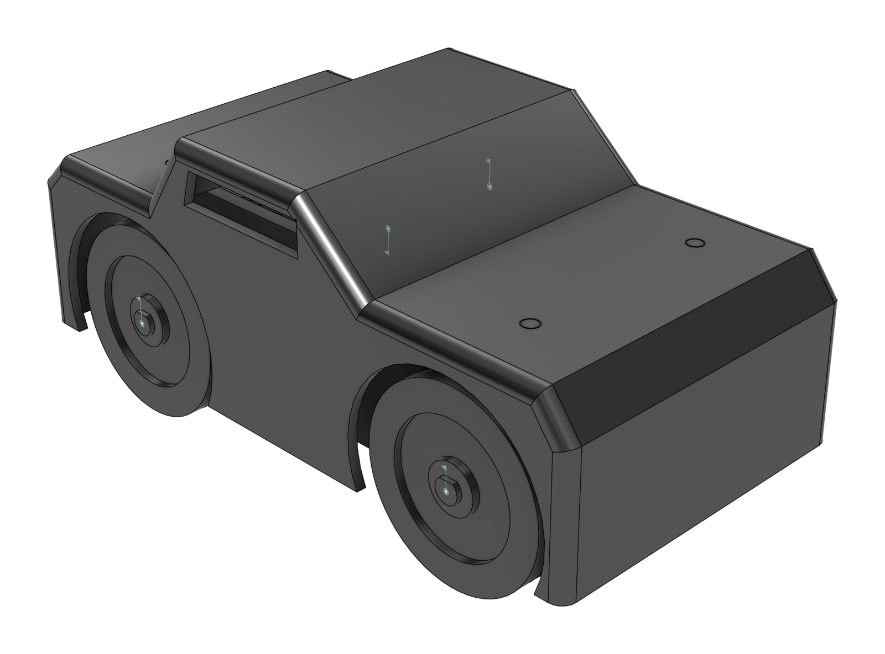
Full assembly with the body shell.
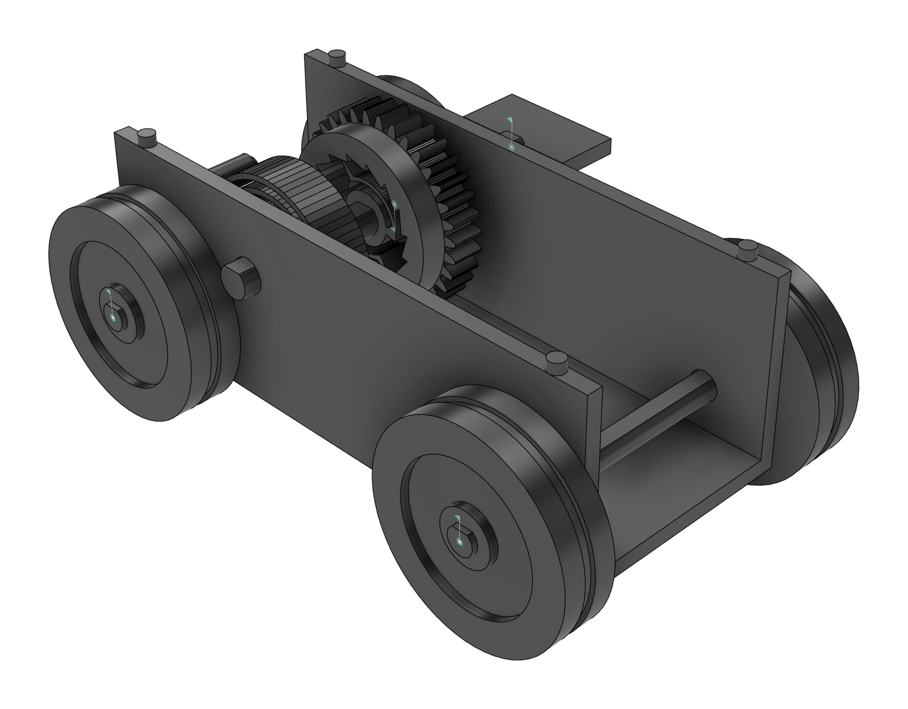
Shell hidden: chassis, axles, and gear train.
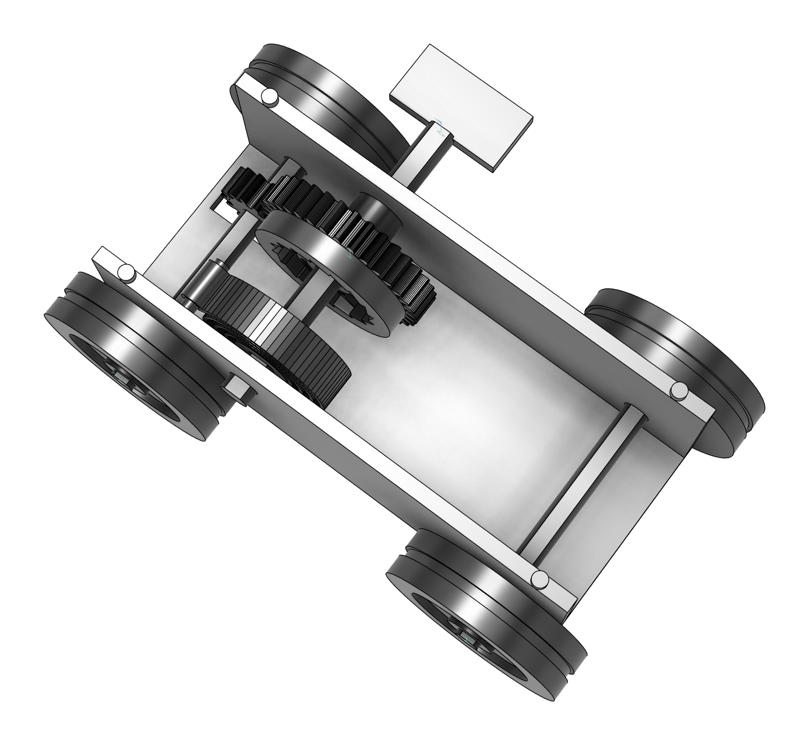
Top view of the drivetrain.
TOLERANCES
No interference
Applied tolerance analysis to every pair of mating parts so the gears and axles turn freely without binding once printed.
MECHANISM
Custom spring
Fabricated the core mechanism parts myself, including the torsion spring, to get a reliable wind every time.
TESTING
Fit and function rounds
Reprinted and adjusted parts through multiple test rounds until the toy wound and ran consistently.
PROJECT 04 · ASME AT UIUC WITH AVEA ROBOTICS · 2025 TO 2026
Five-finger dexterous robotic hand
Worked with the startup AVEA Robotics to design and build a remote-controlled robotic hand. I 3D printed the hand components, tuned the mechanism tolerances for smooth actuation, and programmed preset servo grip motions in Python. We presented the finished hand at the UIUC Engineering Open House.
5 fingersServo-actuated, triggered by a remote
PythonPreset grips that repeat the same way every time
EXPERIENCE
Molex
May to Aug 2026 · Lisle, IL
Mechanical Engineering Intern
Designed a test fixture to measure 1 mm connector offset and verify assemblies met safety spec
Ran a design of experiments on 12 busbar variations with T-rise testing to pick a production design
Performed root cause analysis on liquid-cooled busbar defects and restored their 40% T-rise advantage
Helped design plastic connector housings for injection molding, including rib design
Iterated a 6 mm connector 20 times in Siemens NX and Teamcenter; built prototypes with heat staking and laser engraving
Work details and images are confidential.
Energy Transport Research Lab
Aug 2026 to present
Undergraduate Researcher, UIUC
Running flow boiling and condensation tests in a tube-in-tube two-phase test loop
Supporting loop modifications and instrumentation with thermocouples and pressure transducers
Reducing test data to heat transfer coefficients and pressure drop across mass flux and quality sweeps